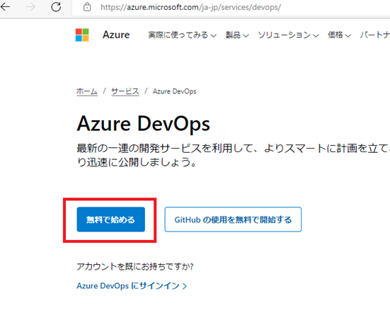
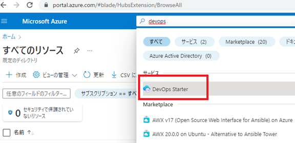
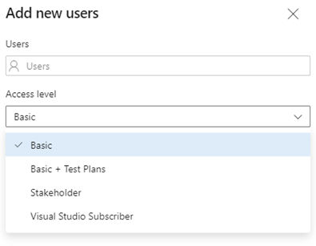
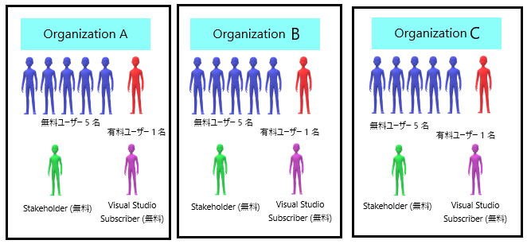
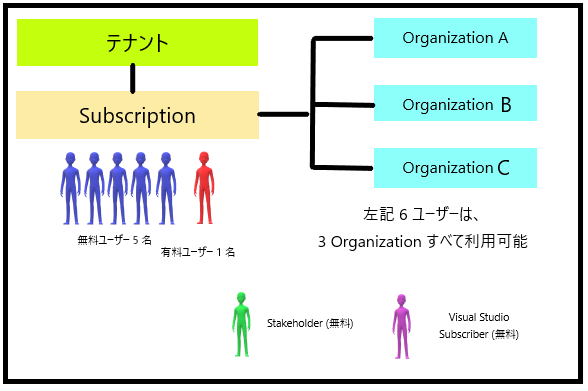

こんにちは、Japan Developer Support Core チームです🐶
いつも Azure DevOps Services をご利用いただき、ありがとうございます。
Azure DevOps Services では、ほぼすべての機能を無料で始めることができますが、逆にどのようなときに課金が発生するのか、課金しなければならないシナリオとはどんなものがあるのか、お問い合わせいただくことがあります。
そこで本記事では、Azure DevOps Services の料金体系についてご案内します。
Azure DevOps Services の始め方について
Azure DevOps Services は、無料で開始することができます。
開始方法は、Azure DevOps Services のサービス ページ から開始した場合と、 Azure Portal の [DevOps Starter] から開始した場合の二通りあります。
自動で作成されるリソース等が異なるので、お好みの方法を選択ください。
Azure DevOps Services のサービスページ から開始した場合:
Azure DevOps Services のみのリソースを作成する
Azure の権限が不要 (Azure サブスクリプションにおける管理者権限など)

DevOps Starter から開始した場合:
Azure DevOps Services およびデプロイ先のリソースを作成する (Azure App Services や VM などが一緒に作成される)
Azure DevOps Services からデプロイ先のリソースに対して CI/CD が設定されている状態で自動的にプロジェクトを作成する

Azure DevOps Services の課金シナリオについて
ここまでは無料で利用する場合のご案内でしたが、無料の枠を超えると従量課金制となり、毎月利用料金を支払うモデルとなります。
必要な時に必要な分を継続購入し、常に最新の環境を手に入れるというサービスです。
支払い用に Azure サブスクリプションを設定すると、課金が必要なサービスが利用可能となり、この設定をしない場合には勝手に課金されることはありません。
Azure サブスクリプションは、Azure DevOps Services の Organization に対して一つ設定 (※) することが可能です。
[Organization settings] - [Billing] ページで Azure サブスクリプションを設定することにより、対象の Organization で用いる有償機能の請求先 Azure サブスクリプションとして紐づけされます。
※ 以下のドキュメントで、Azure サブスクリプションの設定方法を紹介しています。
請求の設定
また課金には、ユーザー ライセンスに対する課金と個別サービスに対する課金の二通りのシナリオがあります。
ユーザー ライセンス
Basic プランまたは Basic + Test プランをユーザーに割り当てる個別サービス
Azure Pipelines で追加の並列ジョブを購入、または Azure Artifacts で追加の容量を購入するこれら二つの課金シナリオについて、以下に詳しくご説明していきます。
ユーザー ライセンスに対する課金について
Azure DevOps Services でご利用いただけるユーザー ライセンスは 4 通り存在します。
各ライセンスでご利用いただける機能は、Access Level (※) で許可・制限されます。

Basic
基本のライセンスであり、Azure DevOps の機能である Azure Pipelines、Azure Boards、Azure Repos、Azure Artifacts が利用可能です。
最初の 5 ユーザーまでは無料で使用することができますが、6 人目以降の使用は一人当たり $6(月額) です。Basic + Test Plans
上記 Basic に加え、Azure Test Plans を利用するためのライセンスで、一人当たり $52(月額) です。
Basic に比較すると高額となるので、Azure Test Plans を利用したい場合は、まずは 30 日間の無料試用期間を利用してお試しいただくといいかもしれません。Stakeholder (利害関係者)
各機能へのアクセスが制限されている無料のライセンスです。
作業項目 (バグを含む) を作成および編集できますが、ビルドを実行したり、プルリクエストを表示したりすることはできません。
コードや CI/CD 機能にアクセスできないマネージャー アカウントと考えることができます。Visual Studio Subscriber
Visual Studio サブスクリプションを保持しているユーザーに対する無料のライセンスです。
Visual Studio のサブスクリプション レベルに応じて、利用できる範囲には制限がありますので、詳細については以下をご参照ください。
Visual Studio サブスクリプションの Azure DevOps※ Access Level につきましては、以下弊社のドキュメントもご確認ください。
ユーザーが複数の Organization にまたがる場合
複数の Organization に同じユーザーが重複して登録される状況を考慮し、Azure DevOps Services には、以下の二種類の支払い方法があります。
Single organization (既定はこちら)
Multi-organization (※)
Single organization の場合は、1 Organization ごとに 5 名の Basic ユーザーを超えた場合に、ユーザーの課金額が計算されます。
この場合、もし複数の Organization にまたがって同一の Basic ユーザーが存在する場合は、同一ユーザーであったとしても Organization ごとに一人分の請求が発生します。
Multi-organization の場合は、同じ Azure サブスクリプションに紐づく Organization 全体で、Basic ユーザーの数が 5 名を超えた場合に、ユーザーの課金額が計算されます。※ Multi-organization の設定方法につきましては、以下弊社のドキュメントをご確認ください。
例) 同一サブスクリプションにて、Organization を A、B、C と三つ作成し、Organization 毎にユーザーを各 6 名ずつ追加する場合
【Single organization 設定時】(既定はこちら)

有料ユーザー 1 x 3 Organization = 3 ユーザー分の課金となり、$6 x 3 = $18(月額) の課金となります。
赤、青のユーザーは各 Organization ごとに異なるメンバーでもよく、Stakeholder、Visual Studio Subscriber は常に無料です。【Multi-organization 設定時】

有料ユーザー 1 x 1 サブスクリプション = 1 ユーザー分の課金となり、$6 x 1 = $6(月額) の課金となります。
ただし、赤と青のユーザーは全 Organization で共通となり、Stakeholder、Visual Studio Subscriber は常に無料です。ほとんどのユーザーが一つの Organization しか利用しない場合は、Single organization が最もコスト効率が高くなります。
逆に、多くのユーザーが複数の Organization を利用する場合は、Multi-organization が最適な選択肢であると考えられます。
個別サービスに対する課金について
Azure Pipelines と Azure Artifacts に無料で付属している個別サービスに対して、追加で購入する場合に課金されます。
Azure Repos のリポジトリ数およびソースコード等のデータ容量、 Azure Pipelines のビルド成果物などのリソースに対しての課金は発生しません。
Azure Pipelines
Microsoft ホステッド CI/CD(1,800 分／月)、1 個のセルフ ホステッド CI/CD(毎月の分数制限なし) が無料です。
最小の CI/CD を実現したいということであれば十分ですが、複数またはより大きなプロジェクトをホストしている場合は、追加で購入できます。Microsoft ホステッド CI/CD 無料並列ジョブ : 1
毎月の時間制限 : 一か月あたり最大 1,800 分
有料の追加ジョブ : 追加並列ジョブごとに $40(月額)※セルフ ホステッド CI/CD 無料並列ジョブ : 1
毎月の時間制限 : なし
有料の追加ジョブ : 追加並列ジョブごとに $15(月額)※
※ 並列ジョブの購入につきましては、以下弊社のドキュメントもご確認ください。
- Azure Artifacts
Azure Artifacts では NuGet、npm、Python、Maven、Universal Packages 等様々なパッケージに対応しており、これらのパッケージを 2GiB までは無料で格納できます。
(現在使用中のサイズは、Azure DevOps ポータルの [Organization settings] - [Billing] ページ内 Artifacts の行の Used で確認できます。)
もし、無料の 2GiB を超えた場合は、支払用に Azure サブスクリプションを設定していれば自動的に超過分に対して課金が発生します。
Azure サブスクリプションを設定していない場合には、そのまま継続して利用できますが、パッケージの新たなアップロードはできません。
Azure Artifacts の超過分の料金は、次のとおりです。
| 10 GiB まで | GiB あたり $2(月額) |
| 10 GiB から 100 GiB | GiB あたり $1(月額) |
| 100 GiB から 1,000 GiB | GiB あたり $0.50(月額) |
| 1,000 GiB 以降 | GiB あたり $0.25(月額) |
本ブログの内容は弊社の公式見解として保証されるものではなく、開発・運用時の参考情報としてご活用いただくことを目的としています。もし公式な見解が必要な場合は、弊社ドキュメント (https://learn.microsoft.com や https://support.microsoft.com) をご参照いただくか、もしくは私共サポートまでお問い合わせください。